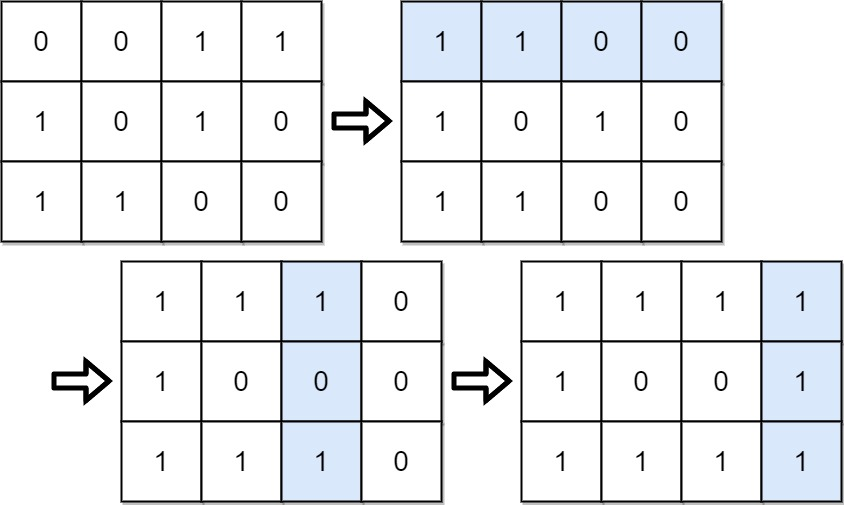

861. 翻转矩阵后的得分
| 题目信息 | 内容 |
|---|---|
| 难度 | 中等 |
| 核心模式 | 贪心：先确保每行首位为 1，再按列比较 0/1 数量决定是否翻转 |
| 时间复杂度 | O(m·n) |
| 空间复杂度 | O(1) |
题目与约束
给你一个大小为 m x n 的二元矩阵 grid ，矩阵中每个元素的值为 0 或 1 。
一次 移动 是指选择任一行或列，并转换该行或列中的每一个值：将所有 0 都更改为 1，将所有 1 都更改为 0。
在做出任意次数的移动后，将该矩阵的每一行都按照二进制数来解释，矩阵的 得分 就是这些数字的总和。
在执行任意次 移动 后（含 0 次），返回可能的最高分数。
示例 1：

输入：grid = [[0,0,1,1],[1,0,1,0],[1,1,0,0]]
输出：39
解释：0b1111 + 0b1001 + 0b1111 = 15 + 9 + 15 = 39
示例 2：
输入：grid = [[0]]
输出：1
提示：
-
m == grid.length -
n == grid[i].length -
1 <= m, n <= 20 -
grid[i][j]为0或1
核心不变量
每一行最高的位（第 0 列）权重是
2^(n-1)，超过该行其余所有位权重之和，故每行首位必须为 1；在首位已全为 1 的前提下，各列可独立翻转，使该列 1 的个数取max(ones, m - ones)即最优。
完整推导
思路推导
-
最高位最值钱。 一行的二进制值中，最左边一位权重
2^(n-1)，比其余位加起来还大。所以对每一行，只要首位是 0，就应整行翻转让它变成 1——这是任何最优方案的第一步，且不影响别的行。 -
行列操作互不干扰地“定格”。 行翻转完成后，第一列必然全是 1。此后任何列翻转都不应再动第 0 列（它已经全是 1，翻了反而变差），而第
j列（j ≥ 1）的翻转只影响本列，不影响首位优势。 -
每列独立贪心。 对第
j列，统计当前 1 的个数ones。若不翻，本列贡献ones个 1；若翻，贡献m - ones个 1。取较大者即可，各列互不影响，逐列取最优即全局最优。 -
直接算分，不必真的翻。 翻转第
j列等价于“取反后统计”，所以该列最终 1 的个数为max(ones, m - ones)，其对总分的贡献是max(ones, m - ones) · 2^(n-1-j)。把每列贡献相加即答案。 -
小例子。
grid = [[0,0,1,1],[1,0,1,0],[1,1,0,0]]：第 0 行首位为 0，整行翻转后第 0 列全 1。再按列统计 1 的个数并取max(ones, m-ones)，逐列加权求和即得 39。
Java 实现（逐列贪心计数）
class Solution {
public int matrixScore(int[][] grid) {
int m = grid.length, n = grid[0].length;
int score = 0;
for (int j = 0; j < n; j++) {
int ones = 0;
for (int i = 0; i < m; i++) {
int bit = grid[i][j];
// 若该行首位是 0，说明整行被翻转，本格实际值取反
if (grid[i][0] == 0) {
bit ^= 1;
}
ones += bit;
}
// 本列可翻可不翻，取 1 更多的那种，再乘该列权重 2^(n-1-j)
score += Math.max(ones, m - ones) * (1 << (n - 1 - j));
}
return score;
}
}
复杂度
- 时间：O(m·n)。按列遍历整个矩阵一遍，每个格子常数工作。
- 空间：O(1)。只用了若干计数变量，没有额外矩阵。
易错点与扩展（面试高频考点）
- 首位翻转的顺序。 必须先让每行首位变 1，再考虑列；若先翻列再翻行，会破坏“首位全 1”。行翻转只需在逻辑上记录（用
grid[i][0]==0判断），不必真的修改矩阵。 - 不要把第 0 列再拿去“取 max”。 第 0 列已经全 1（
ones == m），取max天然不会翻它，但理解上要清楚：首位绝不能为了别的位置牺牲。 - 权重计算别越界。
n ≤ 20，每行值最大约2^20，m ≤ 20，总分上限约2×10^7，int足够；用1 << (n-1-j)时注意n-1-j非负。 - 扩展：为什么“按列取多数”一定最优？ 各列贡献可加且相互独立，列内 1 越多贡献越大，翻或不翻只能二选一，取较多者即为该列上界，所有列同时取上界即全局最优。
- 泛化。 若把二进制换成任意进制、或每行权重不同，思路仍是“高位优先 + 列独立贪心”，只是权重需按新规则计算。
力扣原题
C++ 实现
#include <vector>
#include <algorithm>
using namespace std;
class Solution {
public:
int matrixScore(vector<vector<int>>& grid) {
int m = grid.size(), n = grid[0].size();
int score = 0;
for (int j = 0; j < n; j++) {
int ones = 0;
for (int i = 0; i < m; i++) {
int bit = grid[i][j];
if (grid[i][0] == 0) bit ^= 1; // 该行首位为 0，整行翻转后取反
ones += bit;
}
score += max(ones, m - ones) * (1 << (n - 1 - j));
}
return score;
}
};
Python 实现
from typing import List
class Solution:
def matrixScore(self, grid: List[List[int]]) -> int:
m, n = len(grid), len(grid[0])
score = 0
for j in range(n):
ones = 0
for i in range(m):
bit = grid[i][j]
if grid[i][0] == 0: # 该行首位为 0，整行翻转后取反
bit ^= 1
ones += bit
score += max(ones, m - ones) * (1 << (n - 1 - j))
return score